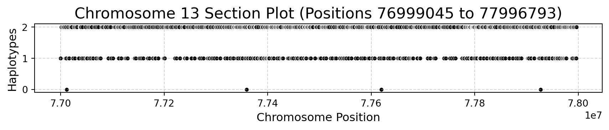
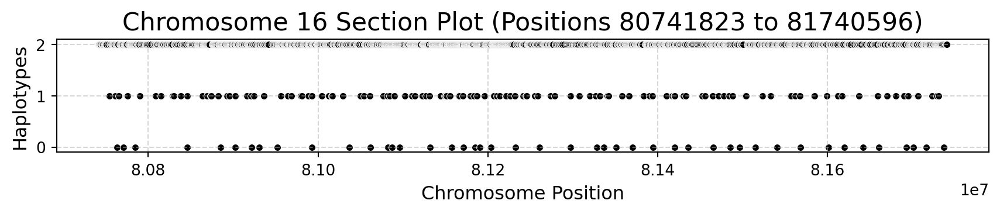
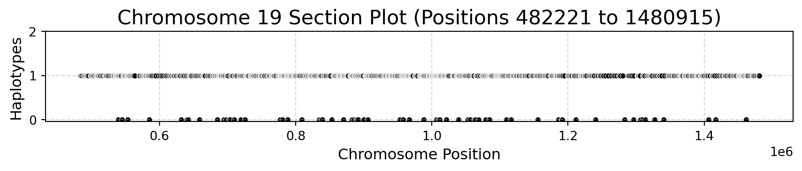

import session_info
import pandas as pd
import seaborn as sns
from pyhere import here
import matplotlib.pyplot as plt
from rfmix_reader import read_rfmixVisualize local ancestry: chromosome section
1 Load packages
2 Load data
prefix_path = here("input/real_data/_m/")
binary_dir = here("real_data/gpu_version/_m/binary_files/")
loci, rf_q, admix = read_rfmix(prefix_path, binary_dir=binary_dir)GPU 0: NVIDIA A100 80GB PCIe
Total memory: 79.15 GB
CUDA capability: 8.0
Multiple files read in this order: ['chr1', 'chr10', 'chr11', 'chr12', 'chr13', 'chr14', 'chr15', 'chr16', 'chr17', 'chr18', 'chr19', 'chr2', 'chr20', 'chr21', 'chr22', 'chr3', 'chr4', 'chr5', 'chr6', 'chr7', 'chr8', 'chr9']Mapping loci files: 0%| | 0/22 [00:00<?, ?it/s]Mapping loci files: 5%|▍ | 1/22 [00:01<00:29, 1.39s/it]Mapping loci files: 9%|▉ | 2/22 [00:01<00:17, 1.17it/s]Mapping loci files: 14%|█▎ | 3/22 [00:02<00:12, 1.48it/s]Mapping loci files: 18%|█▊ | 4/22 [00:02<00:10, 1.73it/s]Mapping loci files: 23%|██▎ | 5/22 [00:03<00:08, 2.03it/s]Mapping loci files: 27%|██▋ | 6/22 [00:03<00:06, 2.35it/s]Mapping loci files: 32%|███▏ | 7/22 [00:03<00:05, 2.65it/s]Mapping loci files: 36%|███▋ | 8/22 [00:03<00:04, 2.85it/s]Mapping loci files: 41%|████ | 9/22 [00:04<00:04, 3.04it/s]Mapping loci files: 45%|████▌ | 10/22 [00:04<00:03, 3.05it/s]Mapping loci files: 50%|█████ | 11/22 [00:04<00:03, 3.10it/s]Mapping loci files: 55%|█████▍ | 12/22 [00:05<00:04, 2.15it/s]Mapping loci files: 59%|█████▉ | 13/22 [00:05<00:03, 2.40it/s]Mapping loci files: 64%|██████▎ | 14/22 [00:06<00:02, 2.95it/s]Mapping loci files: 68%|██████▊ | 15/22 [00:06<00:01, 3.55it/s]Mapping loci files: 73%|███████▎ | 16/22 [00:06<00:02, 2.62it/s]Mapping loci files: 77%|███████▋ | 17/22 [00:07<00:02, 2.16it/s]Mapping loci files: 82%|████████▏ | 18/22 [00:08<00:02, 1.99it/s]Mapping loci files: 86%|████████▋ | 19/22 [00:08<00:01, 1.88it/s]Mapping loci files: 91%|█████████ | 20/22 [00:09<00:01, 1.85it/s]Mapping loci files: 95%|█████████▌| 21/22 [00:10<00:00, 1.63it/s]Mapping loci files: 100%|██████████| 22/22 [00:10<00:00, 1.82it/s]Mapping loci files: 100%|██████████| 22/22 [00:10<00:00, 2.10it/s]
Mapping Q files: 0%| | 0/22 [00:00<?, ?it/s]Mapping Q files: 14%|█▎ | 3/22 [00:00<00:01, 12.17it/s]Mapping Q files: 100%|██████████| 22/22 [00:00<00:00, 71.22it/s]
Mapping fb files: 0%| | 0/22 [00:00<?, ?it/s]Mapping fb files: 5%|▍ | 1/22 [00:00<00:03, 6.33it/s]Mapping fb files: 9%|▉ | 2/22 [00:00<00:02, 7.96it/s]Mapping fb files: 14%|█▎ | 3/22 [00:00<00:02, 8.75it/s]Mapping fb files: 23%|██▎ | 5/22 [00:00<00:01, 10.28it/s]Mapping fb files: 32%|███▏ | 7/22 [00:00<00:01, 12.25it/s]Mapping fb files: 41%|████ | 9/22 [00:00<00:00, 13.76it/s]Mapping fb files: 50%|█████ | 11/22 [00:01<00:01, 10.73it/s]Mapping fb files: 59%|█████▉ | 13/22 [00:01<00:00, 10.17it/s]Mapping fb files: 73%|███████▎ | 16/22 [00:01<00:00, 11.84it/s]Mapping fb files: 82%|████████▏ | 18/22 [00:01<00:00, 10.01it/s]Mapping fb files: 91%|█████████ | 20/22 [00:01<00:00, 9.41it/s]Mapping fb files: 95%|█████████▌| 21/22 [00:02<00:00, 9.26it/s]Mapping fb files: 100%|██████████| 22/22 [00:02<00:00, 7.18it/s]Mapping fb files: 100%|██████████| 22/22 [00:02<00:00, 9.36it/s]3 Visualize chromosome global ancestry
3.1 Organize chromosome
chrom_order = [f'chr{i}' for i in range(1, 23)]
rf_q_pandas = rf_q.to_pandas() # Convert cuDF to pandas DataFrame
rf_q_pandas['chrom'] = pd.Categorical(rf_q_pandas['chrom'],
categories=chrom_order, ordered=True)
rf_q_sorted = rf_q_pandas.sort_values('chrom')3.2 Create and save the plot
plt.figure(figsize=(15, 8))
sns.boxplot(x='chrom', y='AFR', data=rf_q_sorted,
color='lightgray', width=0.6)
sns.stripplot(x='chrom', y='AFR', data=rf_q_sorted,
color='black', alpha=0.1, jitter=True)
plt.axhline(y=0.5, color='black', linestyle='--', linewidth=1)
plt.title('Global Ancestry (AFR) by Chromosome', fontsize=18)
plt.xlabel('Chromosome', fontsize=14)
plt.ylabel('African Genetic Ancestry', fontsize=14)
plt.xticks(rotation=45, fontsize=12)
plt.yticks(fontsize=12)
plt.tight_layout()3.3 Mean and median African ancestry proportion
rf_q_sorted.groupby("chrom").agg({"AFR": ["mean", "median"]})| AFR | ||
|---|---|---|
| mean | median | |
| chrom | ||
| chr1 | 0.746126 | 0.768495 |
| chr2 | 0.686543 | 0.713055 |
| chr3 | 0.665584 | 0.690650 |
| chr4 | 0.745466 | 0.769450 |
| chr5 | 0.584738 | 0.608700 |
| chr6 | 0.523042 | 0.548895 |
| chr7 | 0.530944 | 0.558790 |
| chr8 | 0.585027 | 0.609925 |
| chr9 | 0.668068 | 0.686420 |
| chr10 | 0.748637 | 0.781270 |
| chr11 | 0.715288 | 0.741260 |
| chr12 | 0.673626 | 0.701715 |
| chr13 | 0.836891 | 0.871625 |
| chr14 | 0.695394 | 0.723885 |
| chr15 | 0.710502 | 0.746580 |
| chr16 | 0.644983 | 0.675750 |
| chr17 | 0.574651 | 0.603290 |
| chr18 | 0.793579 | 0.828735 |
| chr19 | 0.456887 | 0.491490 |
| chr20 | 0.459954 | 0.500000 |
| chr21 | 0.496484 | 0.542535 |
| chr22 | 0.457181 | 0.500000 |
print(rf_q_sorted.AFR.mean(), rf_q_sorted.AFR.median())0.6363452039405462 0.6444000000000001Select chromosome with: * High African Ancestry – chromosome 13 * Low African Ancestry – chromosome 19 * Average African Ancestry – chromosome 16
4 Prepare data
4.1 Helper functions
import dask.dataframe as dd
from multiprocessing import cpu_counttry:
from torch.cuda import is_available
except ModuleNotFoundError as e:
print("Warning: PyTorch is not installed. Using CPU!")
def is_available():
return Falsedef _get_pops(rf_q):
return rf_q.drop(["sample_id", "chrom"], axis=1).columns.values
def _get_sample_names(rf_q):
if is_available():
return rf_q.sample_id.unique().to_arrow()
else:
return rf_q.sample_id.unique()4.2 Define column names
pops = _get_pops(rf_q)
sample_ids = _get_sample_names(rf_q)4.3 Convert data to dask dataframe
parts = cpu_count()
ncols = admix.shape[1] // len(pops)
ddf = dd.from_pandas(loci.to_pandas(), npartitions=parts)
data_matrix = admix[:, :ncols] # select the first pop only (pop2 is just 1-pop1)
dask_df = dd.from_dask_array(data_matrix, columns=sample_ids)4.4 Combine loci with haplotype data
ddf = dd.concat([ddf, dask_df], axis=1)
del dask_df # remove for memory consumption4.5 Select chromosomes
chrom13 = ddf[ddf["chromosome"] == "chr13"]
chrom16 = ddf[ddf["chromosome"] == "chr16"]
chrom19 = ddf[ddf["chromosome"] == "chr19"]
del ddf5 Plot a section of each chromosome
5.1 Helper function
from numpy import randomdef select_random_section(df, section_size=10000):
# Get the minimum and maximum positions
min_pos = df['physical_position'].min().compute()
max_pos = df['physical_position'].max().compute()
# Randomly select a start position
start_pos = random.randint(min_pos, max_pos - section_size)
end_pos = start_pos + section_size
# Filter the DataFrame for the selected section
section = df[(df['physical_position'] >= start_pos) & (df['physical_position'] < end_pos)]
##section = section.melt(id_vars=["chromosome", "physical_position", "i"],
## var_name="BrNum", value_name="Haplotypes")
return section.compute() # Compute to bring data into memory
def plot_section(df, section_size, fname):
selected_section = select_random_section(df, section_size)
selected_section = selected_section.sort_values("physical_position")
plt.figure(figsize=(12, 3))
sns.scatterplot(data=selected_section, x='physical_position', y='Br2585',
color='black', legend=False, s=20)
plt.title(f'Chromosome Section Plot (Positions {selected_section["physical_position"].min()} to {selected_section["physical_position"].max()})', fontsize=16)
plt.xlabel('Chromosome Position', fontsize=12)
plt.ylabel('Haplotypes', fontsize=12)
plt.yticks([0, 1, 2])
plt.grid(True, linestyle='--', alpha=0.5)
plt.tight_layout()
plt.savefig(f'local_ancestry.{fname}.pdf', dpi=300, bbox_inches='tight')5.2 Seed for reproducibility
seed_value = 13
random.seed(seed_value)
section_size = 10000005.3 Plotting
plot_section(chrom13, section_size, "chr13")
plot_section(chrom16, section_size, "chr16")
plot_section(chrom19, section_size, "chr19")


6 Session information
session_info.show()Click to view session information
----- cudf 24.06.00 dask 2024.6.2 dask_expr 1.1.6 matplotlib 3.7.1 numpy 1.26.4 pandas 2.0.3 pyhere 1.0.0 rfmix_reader 0.1.14 seaborn 0.13.2 session_info 1.0.0 torch 2.3.1+cu121 -----
Click to view modules imported as dependencies
PIL 10.3.0 anyio NA argcomplete NA arrow 1.2.3 asttokens NA astunparse 1.6.3 attr 23.2.0 attrs 23.2.0 babel 2.10.3 backcall 0.2.0 cachetools 5.3.3 cairo 1.20.1 certifi 2024.02.02 cffi 1.16.0 chardet 4.0.0 charset_normalizer 3.3.2 click 8.1.2 cloudpickle 2.1.0 comm 0.2.2 cuda 12.4.0 cupy 13.1.0 cupy_backends NA cupyx NA cycler 0.10.0 cython_runtime NA dateutil 2.8.2 debugpy 1.6.3 decorator 5.1.1 defusedxml 0.7.1 distributed 2024.6.2 dot_parser NA exceptiongroup 1.2.0 executing 0.10.0 fastjsonschema NA fastrlock 0.8.2 fontTools 4.33.3 fqdn NA fsspec 2022.7.1 gi 3.40.1 gio NA glib NA gobject NA google NA gtk NA idna 2.10 importlib_metadata NA importlib_resources NA iniconfig NA ipykernel 6.15.1 ipywidgets 8.1.2 isoduration NA jedi 0.19.1 jinja2 3.1.1 json5 NA jsonpointer 2.3 jsonschema 4.21.1 jsonschema_specifications NA jupyter_events 0.10.0 jupyter_server 2.13.0 jupyterlab_server 2.25.4 kaleido 0.2.1 kiwisolver 1.4.3 llvmlite 0.42.0 locket NA lxml 4.9.1 markupsafe 2.1.1 matplotlib_inline 0.1.6 mpl_toolkits NA msgpack 1.0.4 nbformat 5.4.0 netifaces 0.10.6 numba 0.59.0 numexpr 2.10.1 nvtx NA optree 0.11.0 overrides NA packaging 21.3 parso 0.8.3 patsy 0.5.2 pexpect 4.8.0 pickleshare 0.7.5 pkg_resources NA platformdirs 3.8.0 plotly 5.9.0 pluggy 1.5.0 prometheus_client NA prompt_toolkit 3.0.30 psutil 5.9.8 ptyprocess 0.7.0 pure_eval 0.2.2 py 1.11.0 pyarrow 16.1.0 pydev_ipython NA pydevconsole NA pydevd 2.8.0 pydevd_file_utils NA pydevd_plugins NA pydevd_tracing NA pydot 1.4.2 pygments 2.18.0 pynvml 11.4.1 pyparsing 3.0.9 pytest 8.2.1 pythonjsonlogger NA pytz 2022.1 rapids_dask_dependency NA referencing NA requests 2.31.0 rfc3339_validator 0.1.4 rfc3986_validator 0.1.1 rmm 24.06.00 rpds NA scipy 1.13.1 send2trash NA setuptools 70.0.0 six 1.16.0 sniffio 1.2.0 socks 1.7.1 sortedcontainers 2.4.0 sphinxcontrib NA stack_data 0.4.0 statsmodels 0.14.0 tblib 3.0.0 tenacity NA tlz 0.12.0 toolz 0.12.0 torchgen NA tornado 6.2 tqdm 4.66.4 traitlets 5.9.0 typing_extensions NA uri_template NA urllib3 1.26.18 wcwidth 0.2.5 webcolors 1.11.1 websocket 1.4.0 yaml 6.0 zict 3.0.0 zipp NA zmq 25.0.0 zoneinfo NA zstandard 0.18.0
----- IPython 8.4.0 jupyter_client 8.0.2 jupyter_core 5.2.0 jupyterlab 4.1.5 notebook 7.1.2 ----- Python 3.9.16 (main, Dec 8 2022, 00:00:00) [GCC 11.3.1 20221121 (Red Hat 11.3.1-4)] Linux-5.14.0-284.11.1.el9_2.x86_64-x86_64-with-glibc2.34 ----- Session information updated at 2024-07-03 15:11